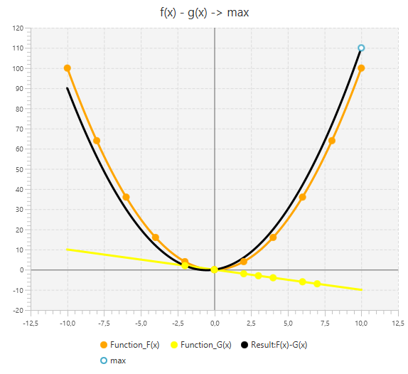

The first function F(x): [Point: x=-5.0 , y=-5.0, Point: x=-3.0 , y=-3.0, Point: x=-1.0 , y=-1.0, Point: x=0.0 , y=0.0, Point: x=1.0 , y=1.0, Point: x=4.0 , y=4.0, Point: x=9.0 , y=9.0]
The second function G(x): [Point: x=-10.0 , y=100.0, Point: x=-8.0 , y=64.0, Point: x=-6.0 , y=36.0, Point: x=-4.0 , y=16.0, Point: x=-2.0 , y=4.0, Point: x=0.0 , y=0.0, Point: x=2.0 , y=4.0, Point: x=4.0 , y=16.0, Point: x=6.0 , y=36.0, Point: x=8.0 , y=64.0, Point: x=10.0 , y=100.0]
On the interval [-2.0;2.0]
